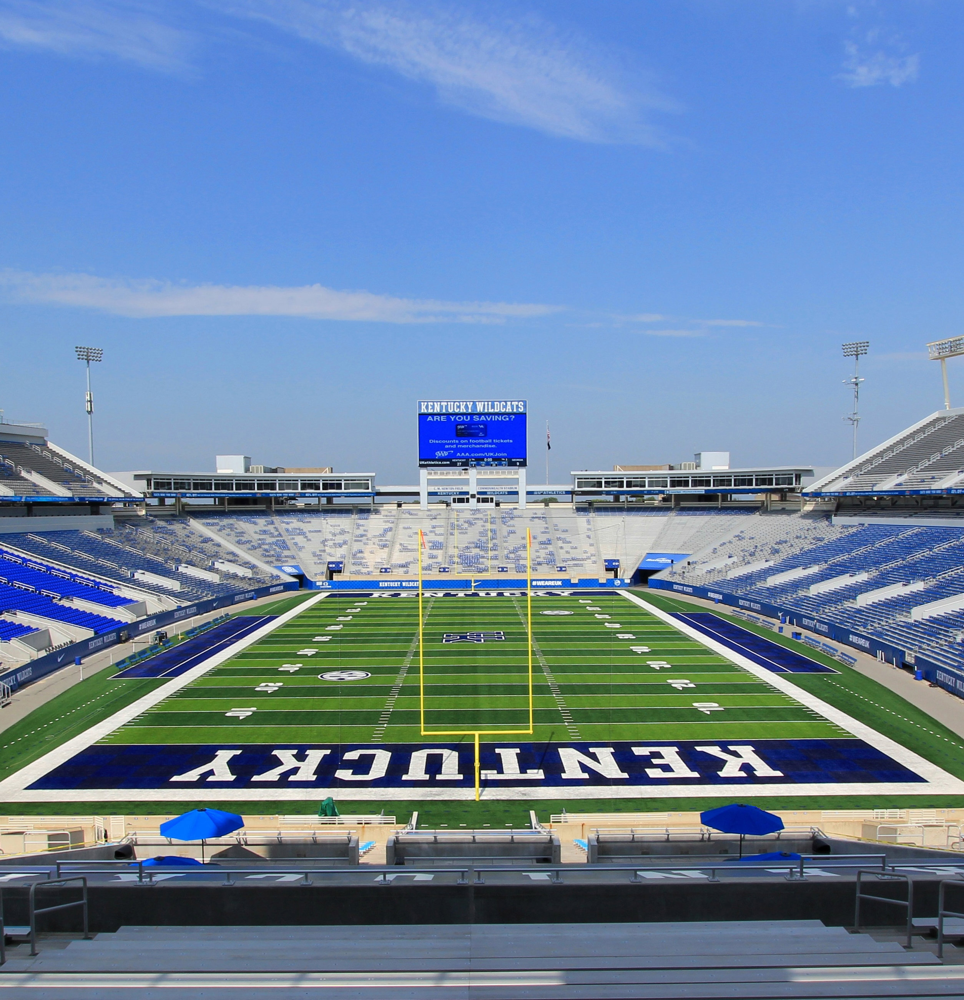

Tickets
The UK Art Museum is pleased to announce Videos for a Stadium, a presentation of sports-related videos by a range of nationally known artists, screened at Commonwealth Stadium on Thursday, April 6, from 7-9 pm. Tickets are $15 for general public and $10 for Museum members.
Funds raised at this event will go to support the Museum’s FREE Admission policy.
Tickets are available online here.
Free parking is available in the Green Lot behind the stadium.
Carl Nathe
Carl Nathe, the public address announcer at UK Football games, will introduce each artist’s work and provide commentary. Concession food and drinks that are normally available during games will be offered for purchase before and after the screening.
About
This unique ‘art meets sports” event explores competition, skill, endurance, teamwork, and body movement. The national anthem, the green grass of various fields, and sports language are also examined. The videos will be presented on the stadium’s high resolution screen and viewed from field level seats in the end zone.
Our Mission
Videos for a Stadium is organized by Stuart Horodner, director of the UK Art Museum. In speaking about the motivation for this event, Horodner states, “UK and Lexington take pride in their teams and fans and the sports-centric culture that exists here. I’m interested in how the arts can intersect with these conditions and contexts, and how our Museum can engage audiences in surprising and memorable ways. This is a great opportunity to present videos that are usually shown at prestigious galleries, museums, and fairs, and to see what happens when art fans and sports fans come together.”
